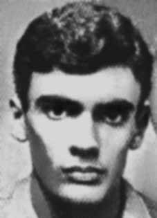

Sérgio
Landulfo
Furtado
CIRCUNSTÂNCIAS DA MORTE
Sérgio Landulfo Furtado foi preso juntamente com Paulo Costa Ribeiro Bastos em um contexto de prisões de militantes do MR-8, no dia 11 de julho de 1971, na Urca, zona sul do Rio de Janeiro. Não se sabe ao certo em que circunstâncias foram presos, persistindo duas versões para o caso: uma indicando que foram presos no apartamento em que residiam; outra, de que conseguiram escapar e, posteriormente, tiveram seu veículo interceptado. De todo modo, ambos foram levados para o Destacamento de Operações de Informações – Centro de Operações de Defesa Interna (DOI-CODI) do Rio de Janeiro, localizado na rua Barão de Mesquita, na Tijuca. Ao saber da prisão de Sérgio e Paulo, no dia 24 de julho de 1972, a família de Sérgio passou a procurá-los, enviando pedidos de informações a diversas autoridades, além de constituir o advogado Augusto Sussekind, responsável pela impetração de habeas corpus no Superior Tribunal Militar (STM), que restou inexitoso. Nelson Rodrigues Filho, Manoel Henrique Ferreira e Paulo Roberto Jabour apresentaram várias denúncias nas auditorias, onde prestaram depoimentos acerca da prisão dos dois militantes. Paulo Roberto Jabour, especificamente, em depoimento prestado na data de 20 de fevereiro de 1979, quando recolhido ao Presídio Milton Dias Ferreira, no Rio de Janeiro, relata que esteve no Departamento de Ordem Política e Social (DOPS) durante o segundo semestre de 1972, e ali percebeu que a morte de Sérgio era voz corrente. Ainda, ao prestar depoimento no inquérito instaurado para apurar as atividades do MR-8, ao indicar nomes de companheiros sabidamente mortos ou desaparecidos, o seu interrogador, major Oscar da Silva, perguntou se Paulo não gostaria de incluir o nome de Sérgio Landulfo na lista. A mesma impressão teve Nelson Rodrigues Filho, quem, inclusive, teve a morte do companheiro confirmada por um escrivão do referido órgão. Sérgio e Paulo figuram em um processo da Justiça Militar, que expediu mandados de prisão para ambos no dia 7 de setembro de 1971. Apenas em 1978, por figurar em um processo juntamente com Paulo, como revel, o ministro do STM, general de Exército Rodrigo Octávio Jordão Ramos, requereu que o desaparecimento de ambos fosse investigado. Ao final, nada foi apurado. Durante todo o período da Ditadura Militar, os órgãos de repressão sustentaram que Sérgio se encontrava foragido ou, até mesmo, exilado no Chile. Registra-se, ainda, a presença de contrainformação acerca do paradeiro de Sérgio Landulfo, uma vez que em informação do Serviço Nacional de Informações (SNI), datada de 1975, diz-se que Sérgio foi condenado a 12 e 13 anos de reclusão pelas auditorias da Aeronáutica e Marinha, respectivamente, no ano de 1972. Conforme o documento, encontrava-se foragido. Contudo, tal informação estava intitulada de “desaparecimento de pessoas”. Destarte, resta demonstrado que as autoridades militares sabiam que Sérgio encontrava-se desaparecido, mas sempre informavam que ele estava foragido, na tentativa de levar ao erro os seus familiares e companheiros e obstar a responsabilidade dos órgãos de repressão por seu desaparecimento.
Sérgio Landulfo Furtado was arrested together with Paulo Costa Ribeiro Bastos in a context of arrests of MR-8 militants, on July 11, 1971, in Urca, south of Rio de Janeiro. It is not known exactly under what circumstances they were arrested, with two versions persisting in the case: one indicating that they were arrested in the apartment where they lived; another, that they managed to escape and, subsequently, had their vehicle intercepted. In any case, both were taken to the Information Operations Detachment – Internal Defense Operations Center (DOI-CODI) in Rio de Janeiro, located on Rua Barão de Mesquita, in Tijuca. Upon learning of the arrest of Sérgio and Paulo, on July 24, 1972, Sérgio's family began looking for them, sending requests for information to various authorities, in addition to appointing lawyer Augusto Sussekind, responsible for filing habeas corpus at the Superior Military Court (STM), which was unsuccessful. Nelson Rodrigues Filho, Manoel Henrique Ferreira and Paulo Roberto Jabour presented several complaints in the audits, where they gave statements about the arrest of the two militants. Paulo Roberto Jabour, specifically, in a statement given on February 20, 1979, when taken to the Milton Dias Ferreira Prison, in Rio de Janeiro, reports that he was at the Department of Political and Social Order (DOPS) during the second half of 1972, and there he realized that Sérgio's death was a common voice. Furthermore, when giving testimony in the investigation established to investigate the activities of the MR-8, when indicating the names of comrades known to be dead or missing, his interrogator, Major Oscar da Silva, asked if Paulo would like to include the name of Sérgio Landulfo in the list. The same impression was had by Nelson Rodrigues Filho, who even had his companion's death confirmed by a clerk from the aforementioned body. Sérgio and Paulo appear in a Military Justice process, which issued arrest warrants for both of them on September 7, 1971. Only in 1978, because they appeared in a process together with Paulo, in default, the STM minister, Army General Rodrigo Octávio Jordão Ramos, requested that their disappearance be investigated. In the end, nothing was found. Throughout the period of the Military Dictatorship, the repression bodies maintained that Sérgio was on the run or even in exile in Chile. The presence of counter-information regarding the whereabouts of Sérgio Landulfo is also recorded, since in information from the National Information Service (SNI), dated 1975, it is said that Sérgio was sentenced to 12 and 13 years in prison by Air Force and Navy audits, respectively, in 1972. According to the document, he was on the run. However, this information was titled “disappearance of people”. Therefore, it has been demonstrated that the military authorities knew that Sérgio was missing, but always reported that he was on the run, in an attempt to mislead his family and companions and prevent the repression bodies from being responsible for his disappearance.
Sérgio Landulfo Furtado fue detenido junto con Paulo Costa Ribeiro Bastos en un contexto de detenciones de militantes del MR-8, el 11 de julio de 1971, en Urca, al sur de Río de Janeiro. No se sabe exactamente en qué circunstancias fueron detenidos, persistiendo en el caso dos versiones: una que señala que fueron detenidos en el departamento donde vivían; otro, que lograron escapar y, posteriormente, su vehículo fue interceptado. De todos modos, ambos fueron trasladados al Destacamento de Operaciones de Información – Centro de Operaciones de Defensa Interna (DOI-CODI) de Río de Janeiro, ubicado en la Rua Barão de Mesquita, en Tijuca. Al enterarse de la detención de Sérgio y Paulo, el 24 de julio de 1972, la familia de Sérgio comenzó a buscarlos, enviando solicitudes de información a diversas autoridades, además de designar al abogado Augusto Sussekind, encargado de interponer el hábeas corpus ante el Tribunal Superior Militar (STM), lo cual no tuvo éxito. Nelson Rodrigues Filho, Manoel Henrique Ferreira y Paulo Roberto Jabour presentaron varias denuncias en las auditorías, donde dieron declaraciones sobre la detención de los dos militantes. Paulo Roberto Jabour, específicamente, en declaración dada el 20 de febrero de 1979, cuando fue llevado a la prisión Milton Dias Ferreira, en Río de Janeiro, relata que estuvo en el Departamento de Orden Político y Social (DOPS) durante el segundo semestre de 1972, y allí se dio cuenta de que la muerte de Sérgio era una voz común. Además, al prestar testimonio en la investigación establecida para investigar las actividades del MR-8, al indicar los nombres de compañeros conocidos muertos o desaparecidos, su interrogador, el mayor Oscar da Silva, preguntó si Paulo quería incluir el nombre de Sérgio Landulfo en la lista. La misma impresión tuvo Nelson Rodrigues Filho, quien incluso hizo confirmar la muerte de su compañero por un funcionario del citado organismo. Sérgio y Paulo aparecen en un proceso de la Justicia Militar, que giró órdenes de aprehensión para ambos el 7 de septiembre de 1971. Recién en 1978, por comparecer en un proceso junto con Paulo, en rebeldía, el ministro del STM, general de Ejército Rodrigo Octávio Jordão Ramos, solicitó que se investigara su desaparición. Al final no se encontró nada. Durante todo el período de la Dictadura Militar, los órganos de represión sostuvieron que Sérgio se encontraba prófugo o incluso exiliado en Chile. También se registra la presencia de contrainformaciones sobre el paradero de Sérgio Landulfo, ya que en información del Servicio Nacional de Información (SNI), de 1975, se dice que Sérgio fue condenado a 12 y 13 años de prisión por auditorías de la Fuerza Aérea y la Marina, respectivamente, en 1972. Según el documento, se encontraba prófugo. Sin embargo, esta información se tituló “desaparición de personas”. Por lo tanto, ha quedado demostrado que las autoridades militares sabían que Sérgio estaba desaparecido, pero siempre informaron que se encontraba prófugo, en un intento de despistar a sus familiares y compañeros y evitar que los órganos de represión se hicieran responsables de su desaparición.